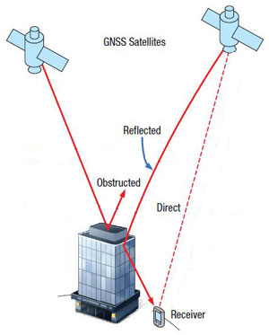
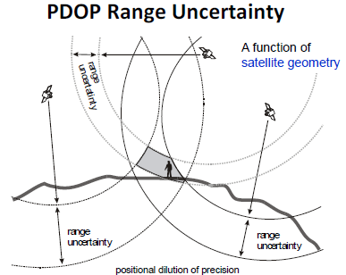
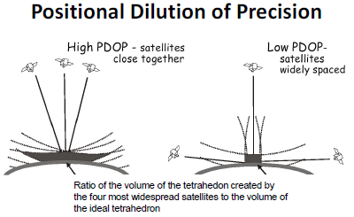
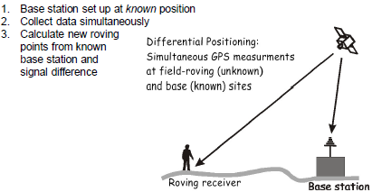
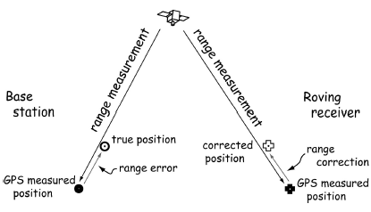
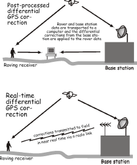

GPS / GNSS
The well known GPS, or Global Positioning System, is actually a specific version under the more general GNSS, or Global Navigation Satellite System. These systems use satellites for navigation, tracking, and measuring positional information.
There are four main GPS / GNSS systems:
- US DoD NAVSTAR
- this is the GPS we know
- ~32 satellites in 6 orbits
- Russian GLONASS GNSS
- EU’s Galileo Project
- 22 / 26 satllites usable
- better coverage in high northern latitudes than NAVSTAR
- China’s BeiDou (formerly known as COMPASS)
- 28+ satellites
- Japan and India have GNSS’s in place as well
GPS Segments
- User Segment: receiver to record transmitted satellite data and processes 3D coordinates
- Control Segment: facilities for tracking, communication, gather, analysis, etc.
- coming from a constellation of orbiting satellites
GPS
With 21+ satellites, in 6 orbital planes, and 12 hour return interval for each satellite, this provides unobstructed worldwide coverage.
Specificiations
- Satellites circle the Earth twice daily
- Four to eight satellites should be visible from any unobstructed location
- Each satellite continuously broadcasts signals on two carrier frequencies
- L1 and L2 (carrier signals)
- Modulated to produce coded signals for easier and quicker posiitioning
- C/A (course acquisition) code (L1) for quicker processing
- P (precision; military signal on L1 and L2)
How it Works
Range by Speed of Light
- Position is estimated based on range distances and travel time
- travel time: difference between transmission time and reception time
- range: speed of light * travel time (\(range=c(t_1 - t_0)\))
Trilateration
2-Dimensions
- Given three pinged satellites, circles are drawn with center radii from the satellites
- The intersection of the circles is the coordinate position
3-Dimensions
- Given four pinged satellites, spheres are drawn with center radii from hte satellites
- The intersection of the spheres is the coordinate position
Note that given three satellites in three-dimensions, there will be two points of intersection, which can be decent for stationary objects.
Relativity
- Special Relativity: an observer on the ground sees satellites in motion relative to them, special relativity predicts we should see their clocks ticking more slowly (7 ms)
- General Relativity: clocks closer to a massive object will seem to tick more slowly than those located further away, thus when viewed from the surface of the Earth, clocks on the satellites appear to be ticking faster (45 ms)
Clocks need to be adjusted by \(45-7=38\) ms per day. This is built into the satellites’ clocks.
Uncertainty
Errors in range measurements and satellite location (ephermeris) introduces uncertainty, which can be a range for the GPS receiver position.
Mitigation using postion fixes for stationary receiver is possible, but does not work for moving receivers.
Some Sources of Error:
- Satellite Clock Error
- Satellite Position Error - Positional Dilution of Precision (PDOP)
- Receiver Error
- Atmospheric / Ionospheric Effects
- Multipath Error: additional potential error due to reflectance (i.e. obstructions)
Errors are dependent on quality of equipment and environmental conditions.
Reflectance Error

PDOP Uncertainty
General Idea of PDOP Range Uncertainty:

Positional Dilution of Precision (high versus low PDOP depends on satellite spacing):

Lower PDOP results in a lower volume of a tetrahedron, thus lower uncertainty from PDOP.
Differential Correction
By using a base station, accuracy is increased by reducing range errors via estimating timing errors.
General Idea:

Range Error versus Range Correction:

Types of Differential GPS
- Post Processed
- Higher accuracy
- However, done a posteriori
- Real-time
- Lower accuracy
- Better navigation
- requires a transmitting base station
- requires common link (FM radio or internet/cell phone)

Wide Area Augmentation System (WAAS)
Real-time differential GPS developed for aircraft navigation. Based on a network of ground reference stations. Accuracy improves from ~13km to under 2m.
Other Applications of GPS
- Tracking
- Navigation
- Field Digitizing
- GPS receiver
- range pole
- laser rangefinder
- electronic compass
- Human Mobility
- Autonomous Vehicles
- Indoor Mapping
- Bluetooth
- Radio Frequency (RFID)
Other Methods for Positioning
- Sound Range
- Cellular Positioning
- GPS Alternatives:
- Ground Based GPS
- Starlink (prevents navigation jamming)